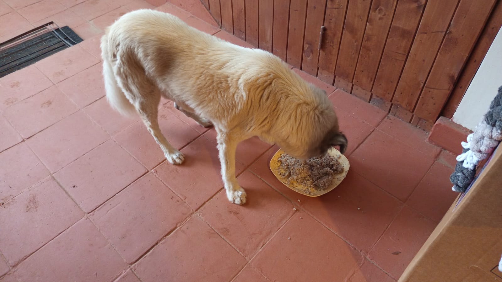

Mucheru World of Golf
Field civil, drainage, and irrigation operations across Mucheru World of Golf on Tuesday, 3rd November 2026 focused on apron pipe realignment, drainage channel leveling, and multi-dam inflow replenishment under the supervision of Mr. Gichuhi and Willy:
Golf Course Operational Highlights
Irrigation crews systematically excavated perimeter HDPE sprinkler pipes along putting green aprons to position them back into trenches at the correct finished grade flush with the apron surface, following up with soil backfilling. Field labor teams worked along the main drainage trench corridor, shaping trench sidewalls and leveling the invert bed to guarantee free gravity water flow toward discharge points. Water inflows continued steadily into all three reservoirs (Dam 1, Dam 2, and Dam 3), capturing runoff and piped inflow to expand storage across the lined basins. Site operations were overseen by Mr. Gichuhi and Willy while Ken took his scheduled off day today and tomorrow.
- Irrigation Sprinkler HDPE Pipe Excavation & Apron Alignment: Laborers excavated perimeter HDPE irrigation pipes along green aprons to adjust elevations flush with apron grading before backfilling with red soil.
- Main Drainage Trench Invert Leveling & Shaping: Ground crews excavated, trimmed sidewalls, and leveled the main drainage trench bed using hand tools to secure uninterrupted gravity flow.
- Active Gravity Inflow into Dam 1 Reservoir: Natural runoff and inflow pipe maintained steady discharge into Dam 1, accumulating water across the geomembrane-lined basin.
- Continuous Clear Water Inflow into Dam 2: Inflow pipeline actively discharged clean gravity flow into Dam 2, steadily raising water levels across the lined reservoir.
- Water Inflow & Calm Storage in Dam 3: Natural surface drainage entered Dam 3, maintaining high water retention across the sinuous lined reservoir.
- Operational Supervision & Scheduled Leave: Course civil and irrigation operations were overseen by Mr. Gichuhi and Willy, with Ken on his scheduled off day today and tomorrow.
Field video recording documenting Tuesday, 3rd November 2026 operations at Mucheru World of Golf:
Field video recording capturing daily course civil works, drainage trenching, and irrigation infrastructure progress at Mucheru World of Golf on Tuesday, 3rd November 2026.
18-hole putting green status audit showing the latest work completed and current condition for each green as of November 3, 2026:
| Green | Current Technical & Agronomic State | Milestone Status |
|---|---|---|
| Green 1 | Pop-up sprinklers confirmed functional and operational spray coverage verified (Oct 27). | Pop-Ups Functional |
| Green 2 | Pop-up sprinklers operational with pressurized spray coverage actively watering green (Oct 28). | Pop-Ups Functional |
| Green 3 | Electric solenoid valve installed on lateral line; river sand hauled to Green 13 (Oct 26). | Solenoid Installed |
| Green 4 | Pop-up sprinklers confirmed functional and operational spray coverage verified (Oct 27). | Pop-Ups Functional |
| Green 5 | Established mature championship putting green turfgrass watered with pop-up sprinklers (Oct 24). | Turf Irrigated |
| Green 6 | Pop-up sprinkler heights adjusted flush below apron level prior to apron leveling (Nov 2). | Sprinkler Height Adjusted |
| Green 7 | HDPE irrigation supply trench cutting through Teebox 6 to Green 7 backfilled and covered (Oct 27). | Pipe Trench Covered |
| Green 8 | Electric solenoid valve installation and lateral pipe fitting completed on green (Oct 26). | Solenoid Installed |
| Green 9 | River sand hauled from stockpiles to Greens 12 and 16 for rootzone layering (Oct 29). | River Sand Hauled |
| Green 10 | River sand application completed across green bed with 2 tipper lorries of sand applied (Oct 29). | River Sand Applied |
| Green 11 | Pop-up sprinklers confirmed functional and operational spray coverage verified (Oct 27). | Pop-Ups Functional |
| Green 12 | River sand spread and leveled across putting green rootzone layer over sub-base (Oct 31). | River Sand Leveled |
| Green 13 | Pop-up sprinkler heights adjusted flush below apron level prior to apron leveling (Nov 2). | Sprinkler Height Adjusted |
| Green 14 | Pop-up sprinkler heights adjusted flush below apron level prior to apron leveling (Nov 2). | Sprinkler Height Adjusted |
| Green 15 | Pop-up sprinkler heights adjusted flush below apron level prior to apron leveling (Nov 2). | Sprinkler Height Adjusted |
| Green 16 | Pop-up sprinkler heights adjusted flush below apron level prior to apron leveling (Nov 2). | Sprinkler Height Adjusted |
| Green 17 | Pop-up sprinkler heights adjusted flush below apron level prior to apron leveling (Nov 2). | Sprinkler Height Adjusted |
| Green 18 | River sand leveled across putting green rootzone bed and apron surrounds cleared (Oct 31). | River Sand Leveled |
18-hole championship teebox status audit tracking launch platform shaping, red soil leveling, and planting readiness as of November 3, 2026:
| Teebox | Current Technical & Earthwork State | Platform Status |
|---|---|---|
| Tee 1 | Irrigation pipe trenches excavated across platform along marked survey lines (Oct 26). | Pipe Trenches Dug |
| Tee 2 | Red soil applied halfway across platform; lateral pipe trenches backfilled (Oct 27). | Red Soil Halfway |
| Tee 3 | Red soil applied, spread, and leveled across platform; lateral pipe trenches covered (Oct 27). | Red Soil Leveled |
| Tee 4 | Irrigation pipe trenches excavated across platform along marked survey lines (Oct 26). | Pipe Trenches Dug |
| Tee 5 | Red soil spread and leveled across platform; lateral pipe trenches backfilled (Oct 27). | Red Soil Leveled |
| Tee 6 | Pop-up sprinkler heights checked and adjusted flush below teebox platform level (Nov 2). | Sprinkler Height Adjusted |
| Tee 7 | Pop-up sprinkler heights checked and adjusted flush below teebox platform level (Nov 2). | Sprinkler Height Adjusted |
| Tee 8 | Pop-up sprinkler heights checked and adjusted flush below teebox platform level (Nov 2). | Sprinkler Height Adjusted |
| Tee 9 | Surplus red soil hauled to Teebox 7 for platform shaping and surface leveling (Oct 29). | Red Soil Hauled |
| Tee 10 | Irrigation pipe trenches excavated across platform along marked survey lines (Oct 26). | Pipe Trenches Dug |
| Tee 11 | Electric solenoid valve installed on lateral irrigation supply line (Oct 27). | Solenoid Installed |
| Tee 12 | Red soil hauled by tractor, spread, and leveled across platform; prepared for planting (Oct 31). | Ready for Planting |
| Tee 13 | Electric solenoid valve installed on lateral irrigation supply line (Oct 27). | Solenoid Installed |
| Tee 14 | Pop-up sprinkler heights checked and adjusted flush below teebox platform level (Nov 2). | Sprinkler Height Adjusted |
| Tee 15 | Irrigation pipe trenches excavated across platform along marked survey lines (Oct 26). | Pipe Trenches Dug |
| Tee 16 | Pop-up sprinkler heights checked and adjusted flush below teebox platform level (Nov 2). | Sprinkler Height Adjusted |
| Tee 17 | Pop-up sprinkler heights checked and adjusted flush below teebox platform level (Nov 2). | Sprinkler Height Adjusted |
| Tee 18 | Irrigation pipe trenches excavated across platform along marked survey lines (Oct 26). | Pipe Trenches Dug |
Operations Agronomy & Engineering Synthesis
Course Agronomy & Earthwork Milestones: Crews excavated and realigned perimeter HDPE sprinkler pipes along putting green aprons to position lines flush at proper depth before backfilling with red soil; all 18 greens and 18 championship teeboxes maintain established rootzone and platform grading, with state continuity preserved from the preceding audit.
Hydraulic & Drainage Infrastructure: Steady gravity water inflow continued across all three lined reservoirs (Dam 1, Dam 2, and Dam 3); field crews excavated, shaped, and leveled the invert bed of the main drainage trench to guarantee free gravity outflow toward discharge corridors.
Sequential photographic field documentation showing reservoir water inflows, apron irrigation pipe realignment, and drainage trench invert leveling:

Dam 1 — Reservoir Water Intake & Inflow Point
High-angle perspective of Dam 1 showing the black HDPE intake pipe discharging water down the geomembrane liner and pooling at the base.

Dam 1 — Aerial View of Water Storage Level
Aerial drone photograph over Dam 1 displaying the full elongated lined basin holding collected runoff water across its base.

Dam 2 — Surface Water Intake Channel & Inlet
Overview of the inlet channel and black intake pipeline directing surface water flow down the embankment slope into Dam 2.

Dam 2 — Active Piped Water Inflow Flowing into Reservoir
Eye-level perspective inside Dam 2 showing an HDPE inlet pipe actively discharging clear flowing water directly into the lined reservoir basin.

Dam 2 — Aerial Perspective of Rising Reservoir Levels
Aerial drone view capturing Dam 2 holding substantial collected water across the geomembrane-lined bed around the central island.

Dam 3 — Reservoir Water Storage & Active Inflow
Elevated view of Dam 3 showing high water levels and calm reflective surface with inflow ripples, with an adjacent putting green in the background.

Green Apron — Irrigation HDPE Pipe Trench Excavation
Aerial drone photograph showing an excavated perimeter trench and HDPE irrigation pipe being aligned flush with surrounding apron levels.

Green Apron — Soil Backfilling Over Realigned Pipe Trench
Ground perspective showing workers with shovels backfilling red soil into the perimeter trench over the realigned HDPE irrigation pipe.

Main Drainage Trench — Invert Leveling & Sidewall Shaping
Laborers working inside the excavated drainage trench using shovels and hoes to grade the trench bed for free gravity water flow.

Drainage Network — Trench Invert Shaping Along Course Perimeter
Workers shaping the earthen drainage channel along the perimeter boundary line to ensure steady gravity water flow toward the outlet.

Perimeter Drainage — Aerial View of Main Trench Leveling
Aerial drone photograph showing the labor crew shaping and leveling the extensive main drainage trench corridor alongside the boundary perimeter.
Chaka Farms
Dairy milking production, goat shed structural repairs, agricultural reseeding, fertilizer backfilling, canine conditioning routines, and compound upkeep at Chaka Farms on Tuesday, 3rd November 2026:
Farm Operational Highlights
Dairy production achieved an 8.5 Litres gross harvest (5.5L morning + 3.0L evening), fully accounted for by 7.3 Litres dispatched for commercial sales (4.3L morning + 3.0L evening) and 1.2 Litres distributed for internal farm allocations (0.5L staff allocation to Gladys, 0.5L to Maasai, and 0.2L farm reserve/calves), balancing the dairy ledger with 100% quantitative reconciliation strictly in Litres. Kamandau assisted the visiting technician with structural repairs on the goat shed roof. Margaret and Monica replanted agricultural seeds in field sections affected by pests and maintained general compound cleanliness. Kinoti and Kimondo oversaw field labor backfilling soil over recently applied fertilizer rows. Willy completed kennel cleaning, off-leash walking on the farm, and command obedience drills, while Mwangi fed the dogs.
- 100% Reconciled 8.5 Litre Dairy Harvest in Litres: Morning and evening milking yielded 8.5 Litres gross harvest, fully accounted for by 7.3 Litres in commercial sales and 1.2 Litres in internal farm allocations with zero discrepancy.
- Goat Shed Roof Structural Repairs: Kamandau worked alongside the visiting technician to carry out necessary structural repairs on the goat shed roof.
- Crop Reseeding in Pest-Affected Sections: Margaret and Monica replanted seeds across specific agricultural field sections damaged by pests to restore crop density.
- Crop Row Fertilizer Backfilling: Kinoti and Kimondo supervised farm hands backfilling soil over recently applied fertilizer rows to ensure proper nutrient incorporation.
- Canine Behavioral Conditioning & Off-Leash Walks: Willy directed morning kennel stall cleaning, conducted off-leash exercise across farm grounds, and conditioned the dogs on essential obedience commands.
- Canine Feeding & Compound Maintenance: Mwangi provided scheduled dietary meals to the dogs, while Margaret and Monica carried out daily compound cleanliness and grounds maintenance.
Official milking production and distribution reconciliation for Tuesday, 3rd November 2026, accounting for all commercial sales and on-farm allocations:
| Category / Transaction | Morning Session | Evening Session | Daily Total |
|---|---|---|---|
| Gross Milk Harvested | 5.5 Litres | 3.0 Litres | 8.5 Litres |
| Commercial Milk Sales (Dispatched) | 4.3 Litres | 3.0 Litres | 7.3 Litres |
| Internal Farm Allocation — Gladys (Staff) | 0.5 Litres | 0.0 Litres | 0.5 Litres |
| Internal Farm Allocation — Maasai | 0.5 Litres | 0.0 Litres | 0.5 Litres |
| Internal Farm Allocation — Farm Reserve / Calves | 0.2 Litres | 0.0 Litres | 0.2 Litres |
| Total Volume Accounted For | 5.5 Litres | 3.0 Litres | 8.5 Litres (100% Reconciled) |
Dairy Accounting & Farm Reconciliation Note
Total gross milk harvested of 8.5 Litres (5.5L morning + 3.0L evening) is 100% accounted for by 7.3 Litres dispatched for commercial sales (4.3L morning sale + 3.0L evening sale) and 1.2 Litres in routine internal farm allocations (0.5L staff allocation to Gladys, 0.5L to Maasai, and 0.2L farm reserve/calves). In accordance with reporting rules, milk volumes are recorded strictly in Litres (never kilograms), and Maasai is designated strictly as Maasai with zero discrepancy. All yields reconcile perfectly with zero variance.
Daily behavioral conditioning routines, canine nutrition, agricultural field operations, and estate groundskeeping conducted on Tuesday, 3rd November 2026:
- Kennel Stall Sanitation & Hygiene: Willy supervised thorough morning kennel washing, scrubbing, and stall disinfection to preserve clean living quarters.
- Off-Leash Field Exercise Across Farms: Handlers completed off-leash walking and exercise sessions across open farm fields to encourage physical vitality and pack coordination.
- Command Obedience & Behavioral Drills: Willy conducted structured obedience exercises, working with the dogs on responsiveness and reliability to basic operational commands.
- Nutritional Canine Feeding: Mwangi prepared and distributed scheduled nutritional meals to the dogs in their respective kennel stations.
- Targeted Agricultural Reseeding: Margaret and Monica replanted seeds in field areas where young seedlings had suffered pest damage, restoring crop emergence.
- Crop Fertilizer Backfilling Supervision: Kinoti and Kimondo supervised the field crew in covering applied fertilizer rows with protective soil layers.
- Estate Compound Cleanliness: Margaret and Monica maintained pristine compound paths, swept work zones, and cleared grounds around the farm offices.
Sequential photographic field documentation showing completed structural repairs and corrugated roof installation on the goat shed:

Goat Shed — Structural Roof Repairs & Sheet Installation
Overview of the goat shed roof showing newly installed and realigned corrugated iron sheets securely fastened across the timber rafters.
Kabete Residence
Concrete moisture curing, structural foundation drainage tunnel excavation, spoil soil spreading at the river area, fountain glass wall installation, and domestic pet care at Kabete Residence on Tuesday, 3rd November 2026:
Residence Operational Highlights
Moisture curing of the cast concrete shutter slab at the SQ fireplace progressed with continuous water ponding sealed under heavy black polythene sheeting, with 19 days remaining in the mandated hydration curing cycle. Excavation crews advanced deep digging of the structural drainage tunnel running behind the SQ building and cold room along the masonry foundation wall. Excavated red spoil soil from the drainage tunnel was transported down to the river area and smoothly leveled along the sloping embankment. Technicians completed the installation and silicone sealing of the fountain glass wall feature over the textured stone cladding in the glass room. In domestic pet care, Ajabu the Golden Retriever enjoyed his nutritious meal served on the veranda floor, and all three resident cats (Reo, Mocha, and Aiko) dined together indoors.
- Concrete Shutter Slab Moisture Curing at SQ Fireplace: Workers maintained continuous water ponding under black polythene sheeting on the SQ fireplace shutter slab, with 19 days left in the curing cycle.
- Deep Drainage Tunnel Excavation Behind SQ & Cold Room: Excavation crews wearing safety gear dug deep into red earth behind the SQ and cold room along foundation walls to form the drainage tunnel.
- Spoil Soil Haulage & Leveling at River Area: Red soil dug from the SQ and cold room drainage tunnel was transported to the river area and evenly leveled across the embankment.
- Fountain Glass Wall Feature Installation Completed: Technicians finalized the installation of the fountain glass wall in the glass room, securing transparent glass panels with silicone sealant over stone tiles.
- Domestic Pet Care — Ajabu Evening Meal: Ajabu the Golden Retriever was well cared for and enjoyed his balanced evening meal served on the veranda floor tiles.
- Domestic Pet Care — Resident Cats Dining Indoors: Resident cats Reo, Mocha, and Aiko dined peacefully together indoors from individual stainless steel bowls.
Sequential photographic field documentation showing shutter slab curing, drainage tunnel excavations, river area soil leveling, fountain glass wall installation, and domestic pet care:

SQ Fireplace — Concrete Shutter Slab Water Curing (19 Days Left)
Worker checking water ponding under the black polythene membrane across the SQ fireplace slab, actively curing with 19 days remaining.

SQ Fireplace — Full Polythene Membrane Curing Coverage
Overhead view of the SQ fireplace concrete slab fully sealed beneath heavy black polythene sheeting to retain essential curing moisture.

SQ Fireplace — Moisture Retention Curing Protection
Perspective view showing trapped moisture and weights holding down the black polythene covering over the slab alongside the stone retaining wall.

Estate Drainage — Trench Excavation Behind SQ & Cold Room
Laborer in a safety vest and helmet standing deep inside the excavated trench, digging through red earth along the foundation masonry wall.

SQ Foundation — Drainage Tunnel Excavation at Ground Level
Workers in safety gear inside the deep drainage channel cutting between the masonry foundation wall and earthen bank near the fireplace.

River Area — Leveling Excavated Soil from Drainage Tunnel
Worker using a shovel to spread and level excavated red soil mounds dumped along the natural embankment slope in the river area.

Glass Room — Fountain Wall Decorative Cladding Preparation
Craftsman fitting textured stone cladding pieces along the recessed fountain wall ledge in the glass room prior to glass mounting.

Glass Room — Fountain Glass Wall Installation Completed
Completed installation of the transparent fountain glass wall panel securely sealed with silicone sealant over the stone cladding feature.

Domestic Pet Care — Ajabu the Golden Retriever Evening Dinner
Ajabu the Golden Retriever enjoying his nutritious dinner from a plate on the terracotta-tiled veranda floor at Kabete Residence.

Domestic Pet Care — Resident Cats Reo, Mocha & Aiko Dining
All three resident cats (Reo, Mocha, and Aiko) eating dinner peacefully together from individual stainless steel bowls on the tiled floor.